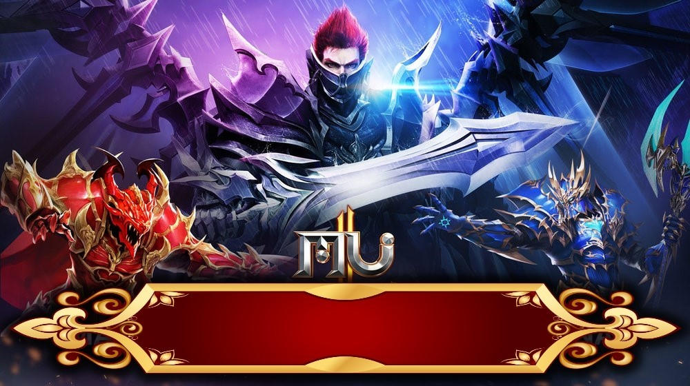

Bienvenido al mundo de MU
MU Salta 99b es una de las versiones más queridas por la comunidad. Lanzada a principios de los 2000, esta versión mantiene la esencia original del juego con sus clásicas clases: Dark Knight, Dark Wizard, Elf, Summoner y Magic Gladiator.
En esta versión encontrarás el mítico Mapa de Devias, el desafiante Atlans y el temido Kundun como jefe final.
Imagen del juego

Mu Salta